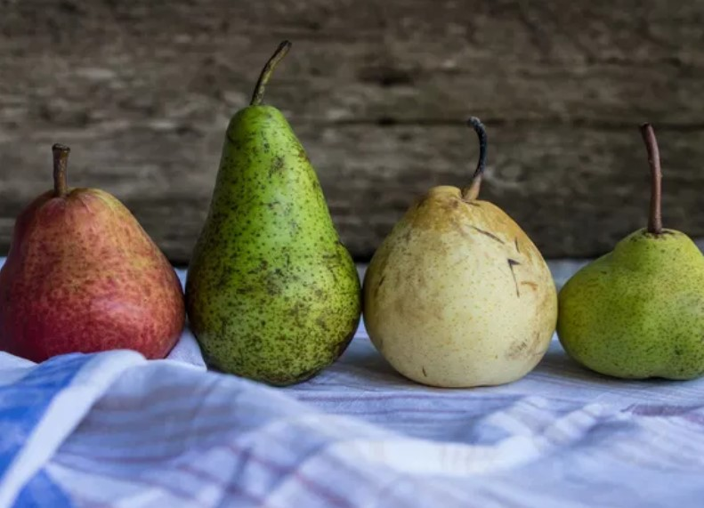

Lista a ser seguida pela Vitória Teixeira durante o decorrer do ano de 2025.
| Alimento | Foto | Kcal em 100g | Beneficios | Como escolher a ideal: | Como armazenar: | Época em que é encontrada em abudância: | Receitas com esse alimento: |
|---|---|---|---|---|---|---|---|
| Batata inglesa | Crua:64 kcal | Beneficios | Opte por aqueles que livre de manchas, com partes murchas, machucados ou pontos escuros e sem brotos | Conservada em um local arejado, fresco, longe da luz e de insetos. A claridade deixa o alimento mais propícia a ficar esverdeado. | O ano todo. | Escondidinho,Batata sauté,batata na airfry... | |
| Cenoura | |
Crua:41 Kcal | Beneficios | Priorize aquelas que tem a coloração viva e não opaca. Se a parte mais próxima ao talo estiver esverdeada descarte, pois é um sinal de que a cenoura está mais amarga. | A melhor maneira de guardar a cenoura crua na geladeira é dentro de um pote com água,durante até 3 semanas | O ano todo. | Bolo,salada,torta de legumes... |
| Tomate | Cru:18 kcal | Beneficios | O fruto estar firme, com pele lisa e brilhante, de cor viva e uniforme. | O ideal é manter o tomate na temperatura ambiente para amadurecer. O melhor local é normalmente a despensa, local seco e escuro. Na temperatura ambiente ele vai ficar madura em cinco dias,depois de maduro basta armazenar na geladeira,que irá durar até 7 dias. | O ano todo. | Molhos,saladas,decoração de pratos... | |
| Alface Crespo\Americano | Cru:14 kcal | Beneficios | Verificar o “talo”, que não podem estar murchos e nem muito moles. As folhas devem estar limpas, brilhantes e firmes, porém não muito grandes. | Envolva o pé de alface em papel-toalha úmido e mantenha em um saco plástico na gaveta de legumes da geladeira por 5 dias. Guarde folhas soltas em uma vasilha coberta com papel-toalha úmido, vedada com filme transparente de plástico. O “pé” dura mais que as folhas soltas. | O ano todo. | Saladas,sanduiches naturais ... | |
| Beterraba | Cru:43 kcal | Beneficios | É necessário que elas tenham casca uniforme e estejam consistentes ao toque. | Logo ao comprar, ela pode ser mantida na geladeira por até 15 dias, embalada em saco plástico perfurado. Uma dica valiosa para a conservação do legume é coloca-lo imerso em água, na geladeira, enquanto não for consumido. Essa água deve ser trocada a cada 2-3 dias, e pode ser mantida por mais tempo sem que o legume comece a enrugar com maior rapidez. | O ano todo. | Saladas,sucos,bolos e etc.. | |
| Cebola | Cru:39 kcal | Beneficios | Escolha sempre as que estiverem bem secas e firmes, sem brotos e as cascas brilhantes. | Guarde-as em lugares ventilados, frescos e escuros, assim, durarão muito mais tempo.Se for usar menos de uma cebola e sobrar um pedaço, embrulhe-o em plástico filme e conserve na geladeira para uso posterior. | O ano todo. | Cebola à dore,saladas,aneis de cebola fritos... | |
| Pimentão | Cru:de 21 a 28 Kcal | Beneficios | Casca brilhante,ela deve estar a casca lisa, sem nenhum tipo de rugas ou ondulações e sem furos. | O ideal é colocar o pimentão cru inteiro na geladeira. Coloque em recipiente hermético ou cobertos com papel alumínio. Na geladeira ele pode durar uns 7 dias ou mais, Lave somente quando for utilizar. | O ano todo. | Saladas. | |
| Pepino | |
Cru:15 kcal | Beneficios | duros, sem nenhuma parte mole, além de apresentar cores vivas e sem manchas amareladas,e sem rugas. | O pepino não deve ser mantido em temperatura ambiente, pois estraga rapidamente. Ele tem que ser colocado sempre na geladeira.> | O ano todo. | Saladas. |
| Repolho | Cru:23 a 31 kcal | beneficios | Escolha um repolho firme, sem folhas murchas ou com manchas. Ele precisa ter um peso bom e cheirar bem, sem odor estranho. | O repolho cru deve ser mantido na geladeira assim que você chegar do mercado, coloque em saco plástico senão irá queimar e só lave na hora que for comer. Ele poderá durar de um a dois meses na geladeira. | O ano todo. | Saladas. | |
| Jirimum\abóbora | Cru:48 kcal | Beneficios | Escolha abóboras que mantenham a cor original, sem rachaduras e manchas escuras. Além disso, prefira escolher a abóbora mais opaca possível. | Fechada e crua você pode deixá-la na temperatura ambiente que não estragar, de preferência local seco e fresco, longe da luz do sol,cortada, então o ideal é deixar na geladeira. Embrulhe com papel filme ou coloque em pote com tampa na geladeira,dura até 4 dias. | O ano todo. | Sopas,cozidos, como acompanhamento... | |
| Banana | Cru:104 kcal | Beneficios | As manchas marrons indicam que estão macias e, quando estão inteiramente escuras, estão maduras demais para comer. | Deixe amadurecer em temperatura ambiente. Não leve à geladeira ou ao congelador. Mantenha-as em lugar fresco. | O ano todo. | Receitas | |
| Mamão papaia | |
Cru:40 kcal | Beneficios | Escolha uma fruta pesada, de casca lisa e sem nenhum furo ou rachadura. | Guardar a fruta levemente verde em temperatura ambiente, até amolecer e ficar amarela. Se madura, armazene num saco de papel fechado na geladeira. | O ano todo. | Receitas |
| Melancia | Cru:26 kcal | Beneficios | As melancias devem ser firmes, com cores uniformes e pesadas. Devem ressoar quando se bate levemente nelas. O lado em que a fruta ficou apoiada no chão deve ser amarelado, não branco ou verde. | Embrulhe as fatias com um filme plástico transparente e leve à geladeira por 2 dias. Melancias inteiras podem ser armazenadas em local fresco por 2 semanas. | O ano todo. | Receitas | |
| Abacaxi | Cru:86 kcal | Beneficios | Para escolher um abacaxi maduro, puxe as folhas para verificar se soltam facilmente. | Quando maduro, consuma o quanto antes. Mantenha na geladeira descascado, fatiado ou em cubos, em recipiente fechado ou em filme de plástico transparente por 3 dias. Também pode ser congelado. | o ano todo. | Receitas | |
| Manga | Cru:59 kcal | Beneficios | Pela cor,as mais amareladas e alaranjadas são mais doces e as esverdeadas não estão maduras ainda,escolher as mangas com a pele lisa, sem machucados, fissuras ou amassados,pelo aroma adocicado e pela consistencia. | Depois de madura pode colocar na geladeira dentro de um saco plástico. Ela irá durar mais cinco a sete dias com casca na geladeira. Se a manga estiver cortada sem casca, ela deve ser colocada em recipiente hermético na geladeira para não estragar, não deixe em temperatura ambiente. | O ano todo. | Receitas | |
| Laranja | Cru:48 kcal | Beneficios | Escolha as frutas com casca brilhante, lisa e polida. A fruta deve parecer pesada para seu tamanho e ter aroma agradável. Evite laranjas secas, mofadas ou com marcas marrons. | Conservar em local fresco e usar antes que a casca murche. Pode-se congelar pedaços e fatias descascadas. | O ano todo. | Receitas | |
| Tangerina | Cru:44 kcal | Beneficios | Verificar se a casca está lisa e sem defeitos locais amassados ou danificados | Coloque-as dentro de um saco plástico e guarde na geladeira. Na geladeira ela irá durar até duas semanas. | O ano todo. | Receitas | |
| Maça | Cru:96 kcal | Beneficios | Pela aparência,observe a cor,brilho e formato,cores vibrantes e uniformes,com brilho e formato sem deformações,além de seres firmes e aroma adocicado e leve. | Na temperatura ambiente a maçã dura até 7 dias sem estragar. Se ficar muito tempo em temperatura ambiente ela murcha e perde o sabor. Portanto, se for demorar para comer, coloque em saco plástico e deixe na geladeira. Na geladeira ela irá durar até dois meses. | O ano todo. | Receitas | |
| Pêra |  | Cru:47 kcal | Beneficios | Escolha as mais pesadas, de cores vivas, casca lisa, brilhante e sem machucados. Devem ter perfume adocicado e polpa firme. | As peras podem ser deixadas na temperatura ambiente em local seco até amadurecerem, normalmente levam de um a quatro dias para estarem completamente maduras.Quando estiverem maduras pode colocar na geladeira embrulhadas no saco plástico para parar de amadurecer e não estragar rápido. Na geladeira as peras inteiras vão durar quase uma semana sem estragar, depois de estarem maduras. | Entre dezembro e março | Receitas |
| Uva com semente | Cru:53 a 83 kcal | Beneficios | Procure por uvas gordinhas, firmes, com os caules flexíveis e cores vibrantes e uniformes | Nunca lave as uvas antes de guardá-las, pois isto irá fazer estragar mais rápido! Lave somente na hora que for comer.Não deixe as uvas em temperatura ambiente, somente se for comer no mesmo dia.Guarde as uvas na geladeira no pote plástico que ela vier do mercado. Se não estiver em pote, coloque em saco plástico com furos. Deixe na geladeira, as uvas irão durar até 14 dias sem estragar. | O ano todo. | Receitas |